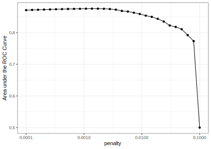
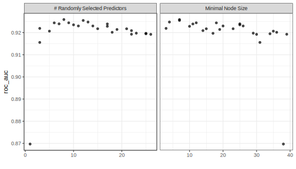
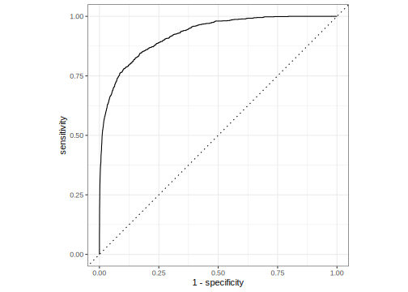

This article requires that you have the following packages installed: glmnet, ranger, readr, tidymodels, and vip.
Introduction
The previous Getting Started articles have been focused on single tasks related to modeling. This example is a broader case study of building a predictive model. It uses all of the previous topics.
Data Spending
The data can be found on the tidymodels.org site:
library(tidymodels)
library(readr)
hotels <-
readr::read_csv('https://bit.ly/hotel_booking_data') %>%
mutate_if(is.character, as.factor)
dim(hotels)
#> [1] 50000 23
table(hotels$children)/nrow(hotels)
#>
#> children none
#> 0.08076 0.91924
set.seed(35225)
splits <- initial_split(hotels, strata = children)
hotel_train <- training(splits)
hotel_test <- testing(splits)
set.seed(948)
val_set <- validation_split(hotel_train, strata = children, prop = 0.80)
val_set
#> # Validation Set Split (0.8/0.2) using stratification
#> # A tibble: 1 x 2
#> splits id
#> <named list> <chr>
#> 1 <split [30K/7.5K]> validation
A first model: logistic regression
It makes sense to start with a simple model. Since the outcome is categorical, a logistic regression model would be a good first step. Specifically, a glmnet model is used to potentially add some amount of feature selection during model training. This method of estimating the logistic regression slope parameters uses a penalty on the process so that less relavant predictors are driven towards a value of zero. One of the glmnet penalization methods, called the lasso method, can set the predictor slopes to absolute zero if a large enough penalty is used.
To specify a penalized logistic regression model that uses a feature selection penalty:
lr_mod <-
logistic_reg(penalty = tune(), mixture = 1) %>%
set_engine("glmnet")
Setting mixture to a value of one means that the glmnet model will focus on potentially removing irrelevant predictors.
To prepare the data for the model, the categorical predictors (e.g., ) should be converted to dummy variables. Additionally, it might make sense fo create a set of date-based predictors that reflect important components related to the arrival date. First, step_date() creates predictors for the year, month, and day of the week. Secondly, step_holiday() generates a set of indicator variables for specific holidays. The addition of step_zv() means that no indicators variables that only contains a single unique value (e.g. all zeros) will be added to the model. This is important because, for penalized models, the the predictors should be centered and scaled.
The recipe for these steps is:
holidays <- c("AllSouls", "AshWednesday", "ChristmasEve", "Easter",
"ChristmasDay", "GoodFriday", "NewYearsDay", "PalmSunday")
lr_recipe <-
recipe(children ~ ., data = hotel_train) %>%
step_date(arrival_date) %>%
step_holiday(arrival_date, holidays = holidays) %>%
step_rm(arrival_date) %>%
step_dummy(all_nominal(), -all_outcomes()) %>%
step_zv(all_predictors()) %>%
step_normalize(all_predictors())
The model and recipe can be bundled into a single workflow object to make management of the R objects easy:
lr_workflow <-
workflow() %>%
add_model(lr_mod) %>%
add_recipe(lr_recipe)
Finally a grid of penalty values are created and the model is tuned. The validation set predictions are saved (via the call to control_grid() below) so that diagnostic information can be available after the model fit. Also, the area under the ROC curve is once again used to quantify how well the model performs across a continuum of event thresholds (recall that the event rate is very low for these data).
lr_reg_grid <- expand.grid(penalty = 10^seq(-4, -1, length.out = 30))
tune_ctrl <- control_grid(save_pred = TRUE)
roc_only <- metric_set(roc_auc)
lr_res <-
lr_workflow %>%
tune_grid(val_set,
grid = lr_reg_grid,
control = tune_ctrl,
metrics = roc_only)
#> ! validation: recipe: The `x` argument of `as_tibble.matrix()` must have column names ...
The resulting validation set metrics are computed and plotted against the amount of penalization:
lr_res %>%
collect_metrics() %>%
ggplot(aes(x = penalty, y = mean)) +
geom_point() +
geom_line() +
ylab("Area under the ROC Curve") +
scale_x_log10()

Performance is generally better when very little penalization is used; this suggests that the majority of the predictors are important to the model. Note the steep drop in the area under the ROC curve that occurs when the amount of penalization is high; this happens because a large enough penalty will remove all predictors from the model.
Since there is a plateau of performance for small penalties, a value closer to the decline in performance is chosen as being best for this model:
lr_best <-
lr_res %>%
collect_metrics() %>%
arrange(desc(mean)) %>%
slice(8)
lr_best
#> # A tibble: 1 x 6
#> penalty .metric .estimator mean n std_err
#> <dbl> <chr> <chr> <dbl> <int> <dbl>
#> 1 0.000530 roc_auc binary 0.871 1 NA
This may result in some predictors still being removed form the model despite the small values of the penalty being best.
For this specific penalty value, the validation set ROC curve is:
lr_auc <-
lr_res %>%
collect_predictions(parameters = lr_best) %>%
roc_curve(children, .pred_children) %>%
mutate(model = "Logistic Regression")
autoplot(lr_auc)

The level of performance generated by this logistic regression model is good but not groundbreaking. Perhaps the linear nature of the prediction equation is too limiting for this data set.
As a next step, we might consider a highly non-linear model generated using tree-based methods.
Tree-based ensembles
Once effective and low-maintenance modeling technique is random forest (used in a previous vignette). This model will be used with less pre-processing than the logistic regression. The conversion to dummy variables and variable normalization are not required. As before, the date predictor is engineered so that the random forest model does not need to work hard to tease these potential patterns from the data.
rf_recipe <-
recipe(children ~ ., data = hotel_train) %>%
step_date(arrival_date) %>%
step_holiday(arrival_date) %>%
step_rm(arrival_date)
The computations required for model tuning can usually be easily parallelized. However, when the models are resampled, the most efficient approach is to parallelize the resampling process. In this case study, a single validation set is being used so parallelization isn’t an option using the tune package. Despite this, the ranger package can compute the individual random forest models in parallel. To do this, the number of cores to use should be specified. To determine this, the parallel package can be used to understand how much parallelization can be done on your specific computer:
cores <- parallel::detectCores()
cores
#> [1] 20
To declare that parallel processing should be used, the num.threads for ranger::ranger() can be passed when setting the computational engine:
rf_mod <-
rand_forest(mtry = tune(), min_n = tune(), trees = 1000) %>%
set_engine("ranger", num.threads = cores) %>%
set_mode("classification")
rf_workflow <-
workflow() %>%
add_model(rf_mod) %>%
add_recipe(rf_recipe)
Again, if any other resampling method were used, it is better to parallel process in the more usual way.
To tune, a space-filling design with 25 candidate models is used:
set.seed(3826)
rf_res <-
rf_workflow %>%
tune_grid(val_set,
grid = 25,
control = tune_ctrl,
metrics = roc_only)
#> i Creating pre-processing data to finalize unknown parameter: mtry
#> Warning: The `x` argument of `as_tibble.matrix()` must have column names if `.name_repair` is omitted as of tibble 2.0.0.
#> Using compatibility `.name_repair`.
#> This warning is displayed once every 8 hours.
#> Call `lifecycle::last_warnings()` to see where this warning was generated.
The results, when plotted, indicates that both mtry and the minimum number of data points required to keep splitting should be fairly small (on average).
autoplot(rf_res)

If the model with the numerically best results are used, the final tuning parameter values would be:
rf_best <- select_best(rf_res, metric = "roc_auc")
rf_best
#> # A tibble: 1 x 2
#> mtry min_n
#> <int> <int>
#> 1 5 3
As before, the validation set ROC curve can be produced and overlaid with the previous logistic regression model:
rf_auc <-
rf_res %>%
collect_predictions(parameters = rf_best) %>%
roc_curve(children, .pred_children) %>%
mutate(model = "Random Forest")
bind_rows(rf_auc, lr_auc) %>%
ggplot(aes(x = 1 - specificity, y = sensitivity, col = model)) +
geom_path() +
geom_abline(lty = 2) +
coord_equal()

The random forest is uniformly better across event probability thresholds.
If this model were chosen to be better than the other models, it can be used once again with last_fit() to fit the entire training set and then evaluate the test set.
However, the model object is redefined so that the variable importance scores are computed for this model. This should give some insight into which predictors are driving model performance.
rf_mod <-
rand_forest(mtry = 5, min_n = 3, trees = 1000) %>%
set_engine("ranger", num.threads = cores, importance = 'impurity') %>%
set_mode("classification")
rf_workflow <-
workflow() %>%
add_model(rf_mod) %>%
add_recipe(rf_recipe)
rf_fit <- rf_workflow %>% last_fit(splits)
#> ! Resample1: recipe: The `x` argument of `as_tibble.matrix()` must have column names ...
From this fitted workflow, the vip package can be used to easily visualize the results:
library(vip)
rf_fit$.workflow %>%
pluck(1) %>%
pull_workflow_fit() %>%
vip(num_features = 20)

The most important predictors were the daily cost for the roo, the type of reservation, the time between the creation of the reservation and the arrival date, and the type of room that was reserved.
Test set results
How did this model do on the test set? Was the validation set a good estimate of future performance?
rf_fit %>%
collect_predictions() %>%
roc_auc(children, .pred_children)
#> # A tibble: 1 x 3
#> .metric .estimator .estimate
#> <chr> <chr> <dbl>
#> 1 roc_auc binary 0.930
rf_fit %>%
collect_predictions() %>%
roc_curve(children, .pred_children) %>%
autoplot()

Based on these results, the validation set and test set performance statistics are very close.